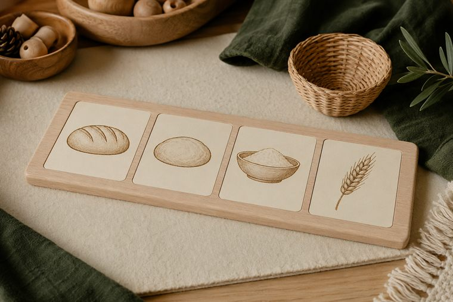
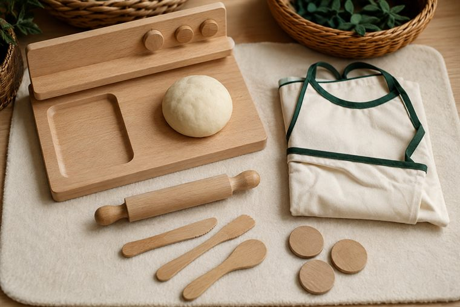
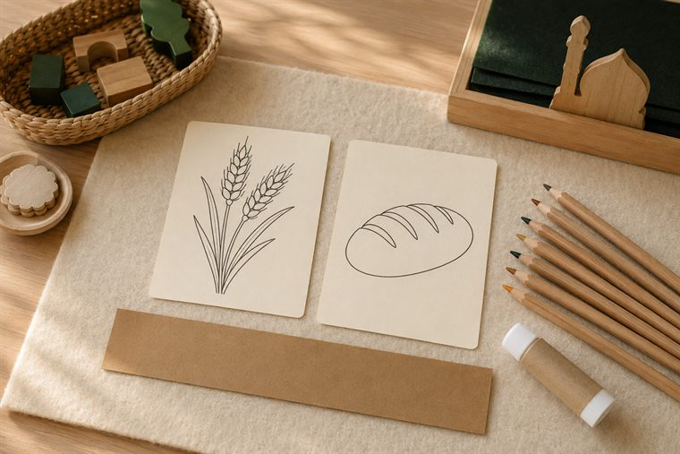
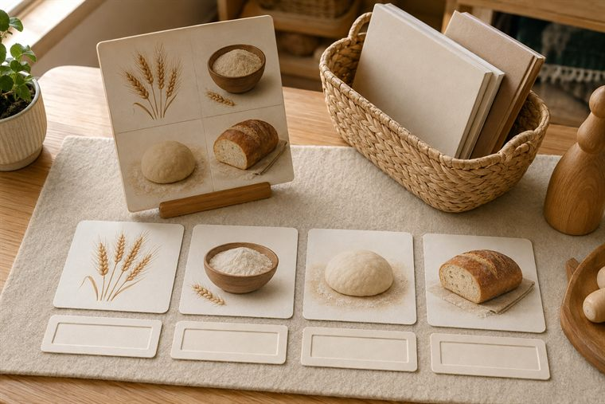

مساحاتُ لعبٍ حرّ بأدواتٍ تعليمية. لكثرة الأعداد نفتح ٤ أركانٍ متوازية بمراكز مختلفة؛ وزّعي المجموعات عليها وتتناوب بينها في الفترتين حتى لا تتكدّس. كل ركنٍ لمسةٌ تطبيقية خفيفة على فكرة اليوم. (أعمار ٥–٦: بناء/تلوين جاهز/قصّ ولصق/ترتيب/اختيار بطاقات/أدوار/حركة — بلا كتابة أو رسمٍ حرّ.)
دروس اليوم المتكاملة: كتابي المنير (سورة النبأ · تدبّر الآيات ٣٧–٤٠) · علّمني ربي (التفكّر في النبات ٢ — قصة رغيف الخبز) · حرف الدال.

🧩 أدرك وأستمتع · «من الحبّة إلى الرغيف»
يرتّبُ الطفل بطاقاتِ رحلةِ الخبز (قمح → طحن → عجين → خبز) لعبًا بلا كتابة، ويعدّ كم نعمةٍ وراء رغيفٍ واحد.
🧰 الأدوات: بطاقاتُ تسلسل الخبز الجاهزة · لوحةُ ترتيبٍ مصوّرة · سِلالُ تصنيف.
📋 دور المعلمة: تنمذجُ التسلسلَ مرّةً ثم تترك الطفلَ يستكشف؛ تقودُ الشكرَ: «كم يدٍ ونعمةٍ وراء رغيفي؟»؛ تحتفي بالمحاولة.
🌱 المعنى المركزي: كم نعمةٍ وراء رغيفٍ واحد؛ فأشكرُ الله رازقي.
📜 قوانين الركن: أبقى في ركني حتى ينتهي الوقت · أحافظ على أدواته · أتشارك وأنتظر دوري · أُعيد الأدوات مرتّبة.

🏠 الإيهام ولعب الأدوار · «مخبزُ الحيّ»
لعبُ أدوارٍ في مخبزٍ/مطبخ: عجنٌ وتشكيلُ عجينِ لعبٍ وبيعُ رغيفٍ بأدواتٍ آمنة، مع شكرِ الرزق وعدمِ الإسراف.
🧰 الأدوات: عجينُ لعبٍ آمن · أدواتُ مطبخٍ لعبية · مئزرٌ ونقودُ لعب · صوانٍ لعبية.
📋 دور المعلمة: تدير الأدوارَ وتذكّر بشكر الرزق وعدمِ الإسراف: «الطعامُ نعمةٌ فلا نرميه»؛ تحتفي بالتعاون.
🌱 المعنى المركزي: الطعامُ رزقُ الله؛ أشكره ولا أُسرف.
📜 قوانين الركن: أبقى في ركني حتى ينتهي الوقت · أحافظ على أدواته · أتشارك وأنتظر دوري · أُعيد الأدوات مرتّبة.

🎨 فنوني الجميلة · «ألوّنُ رحلةَ الخبز»
يلوّنُ الطفل بطاقاتِ القمحِ والرغيفِ الجاهزة، ثم يلصقها متسلسلةً على شريطٍ (قمح → طحن → عجين → خبز)، ويردّدُ «رزقٌ من الله».
🧰 الأدوات: بطاقاتُ رحلةِ الخبز الجاهزة للتلوين · أقلامُ تلوين · شريطُ لصق · لاصق.
📋 دور المعلمة: تُسمّي المراحلَ وتنسبها إلى الرازق؛ تعين على اللصق بالترتيب؛ تُثني على المشاركة لا الإتقان الفنّي.
🌱 المعنى المركزي: أرى نعمةَ الله في كلِّ رغيف؛ فأشكرها.
📜 قوانين الركن: أبقى في ركني حتى ينتهي الوقت · أحافظ على أدواته · أتشارك وأنتظر دوري · أُعيد الأدوات مرتّبة.

📚 أقرأ في مكتبتي · «قصّةُ رغيف الخبز»
يتصفّحُ الطفل قصّةَ رغيفِ الخبز المصوّرة، ويستخرجُ درسَ شكرِ النعمة، ويطابقُ حرفَ اليوم بكلمةٍ (خبز/دقيق).
🧰 الأدوات: قصّةُ رغيف الخبز المصوّرة · بطاقاتُ مطابقةِ كلمة-صورة · كتبٌ مصوّرة في حواملها.
📋 دور المعلمة: تقصّ الحكايةَ بهدوءٍ وتحاور عن الشكر وعدمِ الاستهانة برغيف؛ تربطُ حرفَ اليوم بالكلمة بالصورة.
🌱 المعنى المركزي: أعرفُ قيمةَ النعمة فأشكرُ ولا أستهينُ بها.
📜 قوانين الركن: أبقى في ركني حتى ينتهي الوقت · أحافظ على أدواته · أتشارك وأنتظر دوري · أُعيد الأدوات مرتّبة.
تفاصيلُ الأركان الستّة وروتينُها في تبويب «خريطة الأركان» أعلى الصفحة، ولكلِّ لقاءٍ ركنان تطبيقيّان داخل دليله.